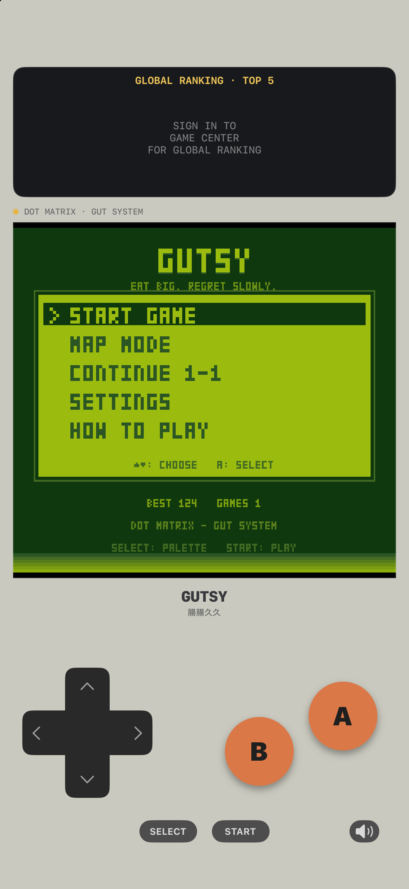
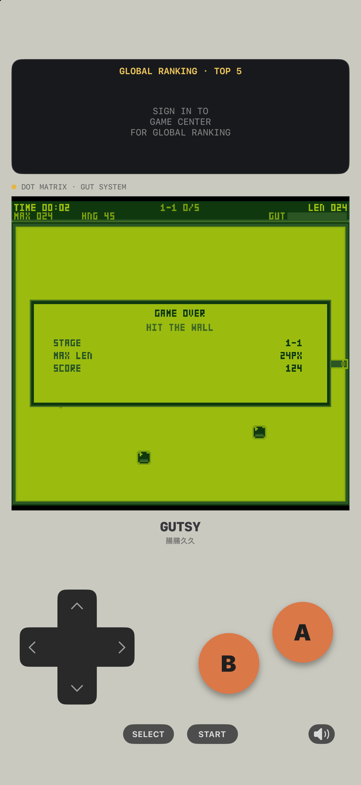

延遲消化
吞下的食物會變成身上的腫塊，隨身體往後移動，消化完成後才真正增加長度。
GUTSY 是一款像素掌機風格的成長制動作遊戲。
食物會先在體內慢慢消化；吃太快會撐爆，吃太少又會餓到縮短。


核心玩法
吞下的食物會變成身上的腫塊，隨身體往後移動，消化完成後才真正增加長度。
胃太滿會直接爆掉。你要在長度、速度、剩餘容量之間判斷下一口值不值得。
毒藥、溜冰鞋、炸彈、鑽石、酵素各有代價與用途，能救命，也可能把局面推向失控。
從草地、沙漠、磚塊到奇異點，每個世界都有不同障礙與速度壓力，共 100 個關卡。
遊玩方式
使用螢幕上的十字鍵與 A/B 鍵操作，支援直向與橫向雙手持模式。標準模式循序挑戰，地圖模式可直接選擇世界與子關卡練習。
排行榜
排行榜分數結合歷史最大長度、生存時間與高風險行動加分。Game Center 登入是選擇性的，不登入也可以完整遊玩。
收費與隱私
GUTSY 不含廣告、不追蹤使用者、不需要帳號，也沒有應用程式內購買。遊戲進度保存在裝置本機。